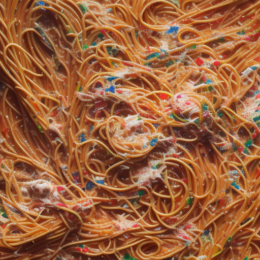

Hilariously Tangled Spaghetti Delight

Description
Prepare to embark on a gastronomic journey that defies convention and challenges the very notion of culinary order. The "Hilariously Tangled Spaghetti Delight" is a dish that dances on the fine line between kitchen mishap and artistic brilliance. A celebration of untamed creativity, this dish is a whimsical testament to the joy of embracing chaos with a dash of humor.
At first glance, you'll be greeted by a tangle of spaghetti that resembles a modern art installation rather than a traditional pasta dish. Every strand seems to have embarked on a daring escapade, forming intricate knots that would stump even the most seasoned sailor. It's as if the spaghetti itself has a rebellious spirit, refusing to conform to the mundane norms of pasta presentation.
But fear not, for hidden within this mesmerizing labyrinth lies a medley of flavors that promise to tickle your taste buds with delight. Beneath the unruly exterior lies a heartwarming jar of tomato sauce, a testament to the notion that even amidst chaos, there's room for the comfort of familiarity. The garlic and onion, chopped in a playful, haphazard manner, join forces in a saucy duet that harmonizes flavors both familiar and unexpected.
As you take your first bite, you'll discover that the tangled spaghetti is a testament to the joy of untangling life's quirks. The pasta, cooked to the perfect blend of 'al dente' and 'whimsically wild,' invites you to partake in the delightful challenge of navigating its intricate twists and turns. And with each mouthful, the grated parmesan cheese sprinkled generously atop the dish provides a burst of creamy indulgence, a reminder that amidst the absurdity, there's always room for comfort.
Sharing the "Hilariously Tangled Spaghetti Delight" with friends and family transforms the meal into an interactive experience, a communal effort to conquer the pasta puzzle. Laughter echoes as forks and knives are wielded in attempts to unravel the pasta enigma, turning a simple meal into a hilarious bonding experience.
So, embrace the chaos, relish the laughter, and let the "Hilariously Tangled Spaghetti Delight" remind you that in the world of culinary creation, a dash of humor can turn even the quirkiest of dishes into a delightful masterpiece.
Ingredients
- 1 pound of spaghetti (or as many as you can untangle from the kitchen drawer)
- 1 jar of tomato sauce (because let's be real, who has time to make their own?)
- 3 cloves of garlic (or however many you find rolling around in the back of your fridge)
- 1 onion (if it's not sprouting, it's good to go)
- 1 cup of grated parmesan cheese (or whatever cheese is left after your midnight snacking)
Instructions
- Begin by attempting to locate your kitchen. If unsuccessful, consider cooking in the living room: it's all about improvisation, right?
- Find your "spaghetti untangling" partner. This can be your best friend, your cat, or that ghost that seems to rearrange things in your house.
- Place the spaghetti on the counter and watch in awe as it becomes an intricate knot only a sailor could love.
- Heat a pot and drop in a tablespoon of confusion. Add a dash of uncertainty and let it simmer.
- Chop the garlic and onion while pretending they are contestants on a reality cooking show. Imagine the drama as they feud over who's the superior flavor enhancer.
- Slowly and carefully (or not, who are we kidding?), separate the tangled mass of spaghetti. This is an art, like untangling Christmas lights, but edible.
- Enlist the help of a spaghetti whisperer if needed: someone who can calm the pasta down with tales of Italian adventures.
- Boil water in a pot. If you forget about it and it evaporates, just pretend you're practicing your magic trick of turning water into air.
- Gently place the spaghetti into the water, giving it the freedom it never knew it craved. Cook until it achieves the perfect blend of 'al dente' and 'how did we get here?'
- Pour the tomato sauce into the pan with the garlic and onion. Let them have a saucy conversation about their dreams and aspirations.
- Add a pinch of chaos, a dash of absurdity, and a sprinkle of puns. Stir well while humming the theme song to your favorite sitcom.
- Drain the cooked spaghetti, preferably without creating a tsunami in your kitchen.
- Plate the spaghetti artistically on each dish, making sure to emphasize its wild, untamed nature. It's not messy; it's avant-garde.
- Generously sprinkle grated parmesan cheese over the spaghetti. Imagine you're the star of a food reality show, where cheese is the surprise ending to every episode.
- Sit down to savor your creation. Take a bite and marvel at how the flavors and textures dance the tango on your taste buds.
- Invite your friends over and watch as they try to untangle the spaghetti with forks, knives, and puzzled expressions.